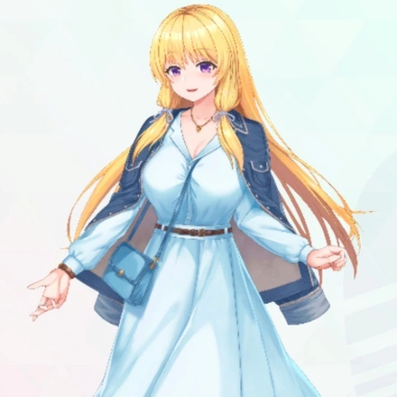
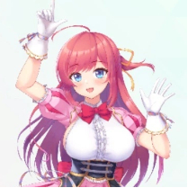
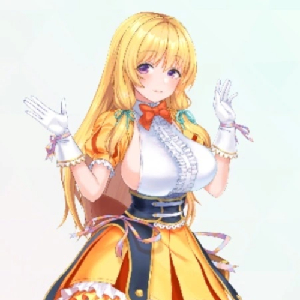
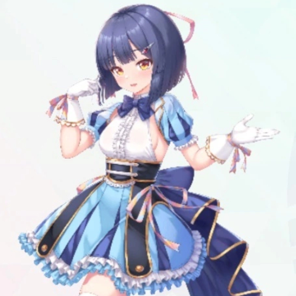

| 角色 | 对话/旁白 |
|---|---|
| 旁白 | 曾见的天空，我们的色彩 概要 历史悠久的大型音乐节「闪耀节庆（Shining Festa）」通过粉丝投票决定了新人名额，Primary Colors 获选出演。 兴奋不已的三人开始为音乐节进行特训，然而由于成员间理念的差异，终于在一日的练习中，爆发了冲突------ |
| 序章 | |
舞台上的少女 | 大家------！ 今天要玩得开心哦------！ |
推野惠 | 哇，好厉害... 好漂亮......！ |
|  花房美波 | 真棒呢。 歌声，很动听。 |
菜菜美菜月 | 哼哼！我知道哦！那个啊... |
菜菜美菜月 | 叫做"偶像"！ |
阳葵真梦 | 大家------！ 这个时刻终于在今年也到来了............！ |
阳葵真梦 | 闪耀节庆（Shining Festa）， 新人名额的报名开始啦------！ |
菜菜美菜月 推野惠 花房美波 | ...... |
阳葵真梦 | 啊、啊咧？ 只有我一个人在兴奋吗...... |
花房美波 | 对、对不起 我是第一次听说"闪耀节庆"这个活动...... |
菜菜美菜月 | 我也是---！不过看到真梦酱的表情就明白了。也就是说... |
菜菜美菜月 | 是有祭典活动对吧？ 好期待啊---。我想吃炒面！ |
推野惠 | 应该不是那种祭典吧？从名字听起来，像是音乐节之类的。 |
阳葵真梦 | 对！就是这样！ 闪耀节庆（Shining Festa）不仅是偶像，更是所有音乐人的憧憬............ |
阳葵真梦 | 这是个历史悠久的音乐节， 甚至有个以新人名额出演过的艺人 都会大红大紫的传说呢............ |
花房美波 | 啊啦，真棒呢... |
菜菜美菜月 | 原来如此... 是很厉害的音乐节还有新人名额有个传说？什么的...... |
推野惠 | ......完全没理解吧。唉............算了，就这样吧...... |
推野惠 | 我可能有点孤陋寡闻。 明明是那么厉害的音乐节，我却完全没印象。 |
阳葵真梦 | 啊，以前是用别的名字举办的。 曾经在惋惜声中结束，这几年才复活的。 |
推野惠 | 啊，是这样啊。呃......啊，找到了。官网，好酷啊。 |
菜菜美菜月 | 啊，我也看看！手机，手机... |
花房美波 | 那个，刚才真梦小姐说的是......新人名额的报名，对吧？ |
推野惠 | 嗯。 对象是从未参加过闪耀节庆（Shining Festa）的艺人............ |
菜菜美菜月 | 听说出演者是通过网络投票选出来的！好像是前十组才能出演。 |
菜菜美菜月 | 所以说... Primary Colors 也报名吧---！ |
花房美波 | 呵呵，能站上大舞台真让人期待呢------ |
推野惠 | 唉...... 该说是操之过急呢，还是该说什么好...... |
阳葵真梦 | 啊，啊哈哈...... 不过，报名是免费的啦！ 我们 MiraiLink 也会报名的。 |
阳葵真梦 | 我也打算推荐给 Lux Production 的大家，大家一起来以闪耀节庆（Shining Festa）为目标吧---！ |
花房美波 | 哦～ |
| 旁白 | *数月后。* |
| 制作人 | 菜月，惠，美波！ 太好了！你们在事务所............ |
花房美波 | 哎呀，制作人先生。有什么事吗............ |
推野惠 | 真少见呢，这么慌张的样子。难道是，做了什么坏事............ |
| 制作人 | 不、不是。不如说是好消息。 因为太震撼了，我都有点混乱了............ |
菜菜美菜月 | 嗯---，是什么呢... 是 Primary Colors 决定宇宙出道之类的吗？ |
推野惠 | 在宇宙的话，连正常的唱歌跳舞都做不到吧。 |
| 制作人 | 不，倒也不至于到宇宙规模............。是个喜讯。 |
| 制作人 | Primary Colors， 将出演闪耀节庆（Shining Festa）。 |
推野惠 | 诶？ 真、真的吗............！？ |
花房美波 | 哎呀！那就是说在网络投票中得到了很多人的支持呢............ |
菜菜美菜月 | 哇---，太好啦---！ 嘛，对我们来说是理所当然的吧？ |
推野惠 | ............ |
花房美波 | 怎么了，惠酱？ |
推野惠 | 虽说舞台不大，但要和国民级艺人同台演出...... |
推野惠 | 总觉得现在就开始胃痛了............ |
菜菜美菜月 | 不用那么担心啦，没问题的！来，过来一下嘛。 |
推野惠 | 嗯、嗯... |
| 制作人 | ............? |
|  菜菜美菜月 | 进入偶像模式后就有精神了吧！ |
|  花房美波 | 只要我们齐心协力............ |
菜菜美菜月 | 无论什么舞台都没问题！ |
|  推野惠 | 是这样吗... |
| 制作人 | （为什么特意换上演出服啊......？） |
| 第一话 | |
推野惠 | ............ |
菜菜美菜月 | 真是的---，开心一点嘛---。 你看，再敲键盘的话，冰激凌要化掉啦？ |
推野惠 | 嗯......就快好了。 |
菜菜美菜月 | 最近一直愁眉苦脸的呢---。 明明多亏了惠才能出演的。 |
花房美波 | 是呀。 多亏惠酱上传的短视频引起了话题，给我们网络投票的人才增加了。 |
菜菜美菜月 | 哎呀---，兔兔萌舞（うさピョコダンス）简直火到爆炸啊。流行的力量太厉害了！ |
推野惠 | ......是啊，是流行的力量。 我们并不是靠实力赢得出演权的............ |
推野惠 | ......好了，做完了。 待会儿我发到你们手机上。 |
菜菜美菜月 | 嗯？这是什么。 |
推野惠 | 练习日程表。 这次观众应该也比平时多，我想好好准备一下。 |
花房美波 | 呵呵，不愧是惠酱。转眼间就做好了。 |
推野惠 | 没、没什么，用软件的话很简单啦... |
菜菜美菜月 | 那个，有件事有点在意。 |
推野惠 | 怎么了？ |
菜菜美菜月 | 今天之后，不是安排了练习吗？ 3小时............。 |
推野惠 | 嗯。怎么了？ |
菜菜美菜月 | 诶---！？ 今天之后我本来打算看电视剧的------！ 我还特意开了订阅会员呢---！ |
花房美波 | 电视剧吗？我也想一起看呢。 |
推野惠 | 一起看吧。等练习结束。 |
菜菜美菜月 | 呜哇---！ 惠太认真了！ 一板一眼！ 拼命三郎---！ |
推野惠 | 要夸还是要损，选一个好吧。好了，吃完就回事务所吧------。 |
菜菜美菜月 | 哈啊............哈啊............哈啊............好累啊...... 早知道不在家庭餐厅吃那么多了...... |
推野惠 | 那个......抱歉。 要是事先说一下就好了。 |
花房美波 | 不是惠酱的错啦。 菜月这家伙，把薯条一个人全吃光了呢。 |
菜菜美菜月 | 因为嘛... 看惠好像不打算吃，我就想我得努力吃掉才行嘛...... |
推野惠 | ......努力的方向完全错了。 |
推野惠 | 嘛，稍微休息一下吧。差不多该到了。 |
花房美波 | 来了...... |
阳葵真梦 | 辛苦啦---！ 您点的东西，给您送来了哦---。 |
推野惠 | 非常感谢。帮大忙了。 |
阳葵真梦 | 嗯嗯！ Primary Colors 要出演闪耀节庆（Shining Festa）了，我也跟着热血沸腾了............ |
阳葵真梦 | 我来帮忙，有什么需要尽管说！ |
花房美波 | 哇啊，好多的东西呢............这是，什么呀...... |
阳葵真梦 | 是闪耀节庆（Shining Festa）的资料！杂志剪报比想象中多...... |
阳葵真梦 | 视频资料都存到这个平板里了！ |
菜菜美菜月 | 好厉害... 这些都是？ |
推野惠 | 我也查过一些， 但搜出来的信息不太多...... |
推野惠 | 所以就拜托了看起来很了解的真梦小姐。 |
阳葵真梦 | 嘿嘿，包在我身上！ |
阳葵真梦 | 话虽如此，闪耀节庆（Shining Festa）是 除了偶像还有其他艺人出演的活动，所以我其实也不是特别了解............ |
菜菜美菜月 | 这么多资料......这样的话，光是看完就要到正式演出了啦！ |
阳葵真梦 | 不必担心！ 我会简明扼要地说明的！ |
花房美波 | 哇啊...... 真是太感谢了---。 |
阳葵真梦 | ...咳哼。 呃，那么从哪里说起好呢...... |
阳葵真梦 | 闪耀节庆（Shining Festa）的前身------一番星音楽祭（一番星音楽祭）的历史就跳过吧...... |
花房美波 | （............哎呀？一番星音楽祭？） |
阳葵真梦 | 从闪耀节庆（Shining Festa）新人名额出演过的偶像的履历开始讲...... |
推野惠 | 稍等一下！？ 那本厚厚的笔记本是什么............那些全部现在都要讲吗............ |
阳葵真梦 | .. ? 嗯，是有这个打算啦............ |
推野惠 | ...不好意思， 我们这里有个说明一长就会睡着的孩子，能请您简洁点讲吗？ |
阳葵真梦 | 嗯、嗯！ 我尽量长话短说...... |
花房美波 | 也就是说，总结一下的话，就是新人名额出演过的偶像 之后走红的可能性很高，是这样吗？ |
阳葵真梦 | 嗯！我调查了所有出演过的偶像并做了统计，绝对没错............ |
菜菜美菜月 | 这样啊---！ 我们终于也要成为明星的一员啦------。 |
菜菜美菜月 | 哼哼------ 好期待正式演出啊---。 |
推野惠 | ...别高兴太早啦。 前提是音乐节上的表演要顺利吧？ |
菜菜美菜月 | 没---问题 只要好好练习就一定能成功啦。 |
推野惠 | 是啊......必须练习呢............ |
花房美波 | ...嗯。 |
阳葵真梦 | 啊咧？ 美波酱，怎么了？ |
花房美波 | 该说是，不祥的预感吗......这种氛围的时候， 多半会发生不好的事情。 |
阳葵真梦 | ... ? 这样啊。我倒不觉得是什么不好的氛围啦............ |
花房美波 | ...说的也是。 可能我也有点神经过敏了。也许是面对大舞台有点紧张吧。 |
阳葵真梦 | 呵呵，原来美波酱也会紧张啊。感觉有点亲近感了呢～。 |
花房美波 | （总觉得菜月酱和惠酱的心情好像有点错位............） |
花房美波 | （从小时候起，这种时候就总会出些问题............） |
花房美波 | （不，是我担心过度了吧） |
| 旁白 | 第二话 |
| 制作人 | ------One, Two, Three, Four！ |
菜菜美菜月 | 惠，美波！要开始咯---............！ |
推野惠 | 嗯............！ |
花房美波 | 来，要摆决胜pose了！ |
| 制作人 | 好，感觉不错！稍微休息一下吧。 |
花房美波 | 呼---，好累啊。 不过感觉确实有在进步呢............ |
菜菜美菜月 | 就是啊---！ 我们在突飞猛进地成长！ |
花房美波 | 呵呵，多亏了惠酱制定的训练计划呢。 |
推野惠 | ......嘛，其实也就是把日常训练强度提高了而已。而且也有制作人的指导。 |
| 制作人 | 不不，我觉得是大家的干劲都很足。 |
菜菜美菜月 | 那，那就是说我功劳最大咯............ |
推野惠 | 为什么会得出这种结论啊... |
花房美波 | 呵呵，那我也要竞选好孩子代表。 |
推野惠 | ...那，我也？ |
菜菜美菜月 | 啊哈哈，全员了不起！ |
| 制作人 | （..................还是一如既往地关系好啊） |
花房美波 | 对了，关于副歌部分的舞蹈动作......总觉得不太协调。 |
菜菜美菜月 | 啊---，我懂---！ 一集中唱歌就会忘记舞蹈动作了------。 |
推野惠 | 啊，那是因为，我觉得是歌曲的节奏和舞蹈的节奏错开了。 歌曲是三连音， 但舞蹈是按八分音符来跳的所以............ |
菜菜美菜月 | 惠，别用专业术语啊。我怎么可能懂嘛！ |
推野惠 | ......既然是偶像， 也该学会理解这种程度的东西了吧。美波懂的吧？ |
花房美波 | 呃，大概明白...... 就像是以前玩过的，画方画三角游戏的感觉对吧？ |
菜菜美菜月 | 是那个一边用右手画方框，一边用左手画三角的那个吧？ |
菜菜美菜月 | 确实，被你这么一说， 感觉和这次的舞蹈动作有点像............！ |
推野惠 | 严格来说不一样啦...... 嘛，看来是明白了，也行吧。 |
菜菜美菜月 | 右手画方方～ 左手，画三角～ 哼哼哼---！ |
花房美波 | 哇，好厉害！ 我没办法画那么快呢............ |
菜菜美菜月 | 嘛---？ 玩游戏的话我可不会输哦！ |
菜菜美菜月 | 来，大家来比赛吧！ |
推野惠 | 不要，现在是练习时间。 身体好像也休息好了，继续练习吧。 |
菜菜美菜月 | 诶---，怎么这样---！ |
花房美波 | 呵呵，游戏还是等会儿再说吧。 |
| 制作人 | （干劲看起来也很足...... 在闪耀节庆（Shining Festa）上应该能让我们看到很棒的表演呢............！） |
菜菜美菜月 | 哈啊～...... 今天也努力练习了，我要大吃特吃啦--- |
菜菜美菜月 | ..咦! 呜、呜呜！这样不行啊！ |
花房美波 | 怎么了，菜月酱。东张西望的... |
菜菜美菜月 | 我们啊，现在可是大牌艺人了。 随时随刻都可能被人看到啊............ |
菜菜美菜月 | 在家庭餐厅也不能松懈， 必须表现得像个艺人！ |
菜菜美菜月 | 呃，今天用餐选什么呢？呐，美波，惠？ |
花房美波 | 呵呵，选什么好呢。 |
推野惠 | 唉............菜月真是无忧无虑啊...... |
菜菜美菜月 | 真是的---，惠？摆出那么阴沉的脸......被粉丝看到可不好哦？ |
推野惠 | 当然会阴沉着脸啊............ 虽然目前练习还算顺利， 但不知道什么时候会发生麻烦事啊。 |
菜菜美菜月 | 才不会发生啦！ |
推野惠 | 又来了，毫无根据的事情还这么自信满满...... |
花房美波 | (......呜... 果然感觉不太妙） |
花房美波 | （每当菜月酱心情很好、 而惠酱在烦恼的时候，就很容易吵架............） |
花房美波 | （............这里我要努力、 让大家的心团结在一起！） |
花房美波 | 菜、菜月酱，惠酱！ |
推野惠 | 怎么了，美波？ |
花房美波 | 那、那个，就是............ |
花房美波 | ...我、我。 蛋糕和冰激凌都想吃来着...... |
菜菜美菜月 | 啊，其实我也在纠结---。我们友好地分着吃吧---！ |
推野惠 | 是啊，这样还能吃到不同种类。 |
花房美波 | 啊，谢谢............！ |
花房美波 | （这样就没问题！ ...才怪呢） |
花房美波 | （在问题表面化之前、 得想办法才行............） |
| 第三话 | |
菜菜美菜月 | 不行了啦～～～～！累死我啦～～～～！ |
推野惠 | 唉............菜月，你最近总是这样。 稍微专注点练习好吗？ |
菜菜美菜月 | 可是嘛——每天每天都是练习练习的............ 身心都跟不上了啦——！ |
推野惠 | 别说这种撒娇的话。 正式演出快到了啊。 |
花房美波 | （呜............怎么办。 气氛真的变得好紧张............） |
花房美波 | （虽然以前也吵过架， 但从来没像现在这样氛围糟糕过......） |
推野惠 | ......喂，美波你也说说她啊。 你也想好好练习吧？ |
花房美波 | 诶？那个...练习是很重要啦...... |
菜菜美菜月 | 美波是站在我这边的对吧？ 差不多该休息了对吧——？ |
花房美波 | 那个...确实感觉也需要休息............ |
菜菜美菜月 | 对吧对吧！ 惠也一脸疲惫的样子，稍微转换下心情嘛！ |
菜菜美菜月 | 这样下去会累倒的哦？制作人不是也这么说过吗？ |
推野惠 | 但是，你明知道没这个时间吧？ 要是在正式演出时搞砸出丑的，有可能是你菜月哦？ |
菜菜美菜月 | 我才不会失败呢！ 就算失败了也不在乎啦——！ |
推野惠 | ......你给我认真点啊。 我们可是偶像啊。已经不是单纯的玩伴小团体了...... |
菜菜美菜月 | 我知道啦——但也不用这么死板吧？ |
菜菜美菜月 | 我们一直以来不都是这样过来的嘛！ |
推野惠 | 话是这么说...... |
花房美波 | 那个——惠酱？ 稍微休息下好吗？ |
推野惠 | 连美波都... |
花房美波 | 演出临近了，我理解惠酱着急的心情。 但是太拼命把身体搞坏就不好了。 |
花房美波 | 要不要喝点茶，慢慢聊一聊？ |
推野惠 | ...不要。 |
花房美波 | 诶？ |
推野惠 | 我......想更认真地练习。 虽然确实有演出临近不安的原因，但不止是这样。 |
推野惠 | 我希望菜月和美波能展现出完美的表演。 可能是我任性吧...我想让观众看到你们最棒的一面。 |
菜菜美菜月 | 这就是任性啊。 |
花房美波 | 菜、菜月酱...！？ |
菜菜美菜月 | 惠追求完美是好事啦...... 但别把我们也卷进去嘛，我们跟不上啦！ |
花房美波 | 菜月酱，不可以这样...... |
推野惠 | 我做的事...给大家添麻烦了吗？ 我明明是为了 Primary Colors 在努力啊... |
菜菜美菜月 | ···困扰？我倒没这么想过------ |
花房美波 | ......所以，到此为止好吗？ |
推野惠 | 对不起。其实我也不想说这些的... 但是，如果真心想做偶像的话，我觉得不能逃避问题。 |
菜菜美菜月 | 那个啊............我也不是因为嫌麻烦才反对练习的哦。 |
推野惠 | 那是什么？ |
花房美波 | （............为什么非要吵架不可呢？ 为什么会这样互相误解呢？） |
花房美波 | 那个，菜月酱和惠酱今天都有点怪怪的。 |
花房美波 | 我们之前不是一直相处得很好吗？ 就算吵架也会和好，互相尊重对方的感受...。 |
菜菜美菜月 | 我没想吵架啊。只是在表达自己的想法而已。 |
花房美波 | 我以为成为偶像就能一直和你们两个在一起了。 青梅竹马三人一直好下去... |
花房美波 | 结果，却变成这样了... |
推野惠 | 这也是没办法的事吧。 认真做事也是作为大人的责任啊... |
花房美波 | ...那我们到底是为了什么才成为偶像的呢？ 如果因为偶像活动吵架的话，干脆------ |
推野惠 | 诶？ |
菜菜美菜月 | 美、美波！？你在哭............ 是我说得太过分了，对不起啦......? |
花房美波 | 诶............？眼泪............ 我，在哭吗............ |
推野惠 | 我、我也......对不起！ 我有点不冷静了。没想到会让美波哭成这样........ |
花房美波 | 对、对不起... 我也不是想这样的... |
花房美波 | 我、我不是想哭的............ 可是停不下来... |
花房美波 | 对不起，对不起...... |
推野惠 | 美、美波没有错啦............ 错的是我............ |
菜菜美菜月 | 唔唔，是我不好，不该想偷懒的...... |
花房美波 | (啊，为什么) |
花房美波 | （为什么就是无法顺利相处呢。 菜月酱也好，惠酱也好，当然我也好） |
花房美波 | （明明都最喜欢对方，都那么珍惜彼此...） |
花房美波 | （明明那么期待三个人一起登上闪耀节庆的舞台的......） |
花房美波 | ...对不起。我今天，大概既唱不了歌也跳不了舞了。 |
推野惠 | 是、是啊。 今天的练习就到此为止吧。 |
菜菜美菜月 | ...嗯。 |
| 第四话 | |
| 旁白 | 「我呢，要搬家了」 「怎么会...那、那你为什么还要告白啊！」 「对不起，对不起...」 |
菜菜美菜月 | ............呐，女演员的表情演技超厉害吧？ |
花房美波 | 好厉害呢。光是表情就能传达出这么丰富的感情。 |
菜菜美菜月 | 对吧～！ 光是能看这部电视剧，开这个订阅服务就值了。 |
菜菜美菜月 | 啊，惠。薯片也给我点！啊——！ |
推野惠 | 唉，别这么使唤人啊。喏，啊——。 |
菜菜美菜月 | 啊——............啊呜。 嚼嚼............让人喂的零食就是好吃啊～。 |
| 制作人 | ............呐，我说。 |
花房美波 | 怎么了吗？制作人先生。 |
菜菜美菜月 | 制作人也一起看剧吗？ |
推野惠 | 零食也有很多种类哦。 |
| 制作人 | 不，那个就不用了...... 不过你们跟前几天的干劲差距是不是有点大？ |
菜菜美菜月 | 你不懂啦～！休养也很重要哦？ 不好好休息的话练习也投入不了啦。 |
| 制作人 | 那倒也是... 不过嘛，看到你们还是像往常一样要好，我就放心了。 |
推野惠 | ... |
| 制作人 | 嗯，怎么了？ |
推野惠 | 没、没什么............ 看起来要好的话，那就太好了。 |
花房美波 | （是啊，如果只是像普通朋友这样相处的话， 就还是往常的样子） |
花房美波 | （像这样一起看剧、吃零食、聊聊天也很开心......） |
花房美波 | （但是一到练习的时候心就散了， 唱歌跳舞都完全配合不起来了......） |
菜菜美菜月 | ...好开心啊～ |
推野惠 | ...嘛，是啊。 |
菜菜美菜月 | 如果像这样懒懒散散地待着就很开心的话...... |
菜菜美菜月 | ......不，没什么。 |
花房美波 | （啊，菜月酱也和我想到一块儿去了呢。 惠酱一定也是......） |
花房美波 | （我们真的有必要成为偶像吗？） |
花房美波 | （但是，如果说出这句话的话，就再也...） |
阳葵真梦 | 大、大事不好！ 发掘到宝藏影像了哦～！ |
| 制作人 | 真、真梦... 门还是轻点开比较好？ |
阳葵真梦 | 啊，对不起............ 因为发现了很厉害的影像太兴奋了...... |
花房美波 | 能让真梦小姐开心的影像，是偶像相关的吗？ |
菜菜美菜月 | 肯定是至今谁都没见过的，神秘偶像的演唱会之类的！ |
推野惠 | 谁都没见过的偶像？那还能叫偶像吗？ |
阳葵真梦 | 这个视频里出现的， 既是偶像又不是偶像， 说是神秘偶像可能也没错！ |
菜菜美菜月 | 诶？难道我猜对了？ |
阳葵真梦 | 呵呵呵，这影像和菜月酱也有关系哦...... 赶快来看吧～ |
菜菜美菜月 | 这说法有点意味深长啊～... |
花房美波 | 这是......是以前的 闪耀节庆的影像吗？ |
阳葵真梦 | 嗯！准确地说那时候还没改名... 还叫做“一番星音乐祭”哦。 |
阳葵真梦 | 啊，这是往年著名偶像『Cherry Pop!』一举成名的舞台影像—— |
| 旁白 | [Cherry Pop!] 2010年代凭借扎实实力获得人气的三人组合。 在一番星音乐祭末期作为新人登场，一举扬名。 |
阳葵真梦 | 这里！这里！请看舞台边缘这里...... |
菜菜美菜月 | 啊，好可爱！有个小孩子想爬上舞台............！ 是意外事件录像？ |
推野惠 | ...我...好像对这个场景有印象... |
花房美波 | ......我也有印象。 “一番星音乐祭”这个名字也好像记得... |
菜菜美菜月 | 诶～？我完全没印象啊............ |
推野惠 | 我想起来了。 菜月不知道也难怪。 因为你没看到这个场景啊。 |
菜菜美菜月 | 什么？这是什么谜语... 惠和美波看到过，就我没看过............？ |
花房美波 | 呵呵，确实菜月酱没看到过吧。 |
菜菜美菜月 | 诶～，到底是什么嘛！？ 完全搞不懂啦——！ |
阳葵真梦 | 其实啊，这个想偷偷爬上舞台被保安抓住的小孩就是...... 过去的菜月酱！ |
菜菜美菜月 | 这孩子是我...！ 难怪这么可爱............ |
花房美波 | 是有这么回事呢。 一起去看音乐活动，结果菜月酱被保安骂了... |
推野惠 | 对对。 是美波的父母弄到了票大家一起去的那次吧。好怀念啊。 |
菜菜美菜月 | 啊—！确实去过类似音乐节的活动！ 完全不记得被保安骂了就是。 |
| 制作人 | ......话说回来，真梦你也真厉害，居然发现了。 |
阳葵真梦 | 一开始只是觉得“和菜月酱有点像呢～”... |
阳葵真梦 | 但看到像惠酱和美波酱这样的孩子也入镜了，就觉得“说不定...” |
推野惠 | 因为我们一直没怎么变呢...... |
花房美波 | 呵呵，是啊。一直都是好朋友。 |
阳葵真梦 | 啊，那个！所以呢！有件事想问你们............ |
阳葵真梦 | 你们三个是不是从小就憧憬偶像啊！？ 是因为这次音乐节为契机才开始想当偶像的...！？ |
| 制作人 | 真、真梦，冷静点............ 突然这么兴奋。 |
阳葵真梦 | 因为啊——！这让人怎么冷静嘛！ 这不就是 Primary Colors 的诞生秘话嘛...！ |
菜菜美菜月 | 啊哈哈，完全不记得了，但大概没憧憬过偶像啦——。 |
阳葵真梦 | 诶～，不会吧～！ |
推野惠 | 以菜月的性格，我觉得她只是想引人注目而已。 |
花房美波 | 她从小就超喜欢被关注呢。 |
菜菜美菜月 | 嗯，我也这么觉得。 大概只是想给惠和美波露一手吧？ |
推野惠 | 爱显摆... |
花房美波 | 但那就是菜月酱的优点啊。总是想向我们展现她最棒的样子。 |
推野惠 | ......嘛，也可以这么说吧。 |
| 第五话 | |
花房美波 | 哇，会场已经搭得差不多了呢～。 |
推野惠 | 是啊...这周末就要正式演出了啊。 一眨眼就到了呢。 |
菜菜美菜月 | 怎么办呀。我们还没找到答案呢。 |
推野惠 | 答案............你在说什么？ |
菜菜美菜月 | 少来了，你明明知道的。 |
花房美波 | 呵呵，我们都清楚彼此在想什么呢。 |
花房美波 | ......我们成为偶像的理由。 |
花房美波 | 不只是普通的好友团体，而是作为偶像存在的理由。 |
菜菜美菜月 | 这不是很清楚嘛。 就算不当偶像，只要在一起就很快乐这件事。 |
菜菜美菜月 | 一起看看电视剧啦电影啦，一起吃吃饭，吃吃零食............ 光是这样就超棒啦。 |
菜菜美菜月 | 我呢，只要有惠和美波在就超级幸福了哦。 |
花房美波 | 呵呵，我也是。 |
推野惠 | 这种事，现在才说？ 我觉得根本不需要确认吧。 |
菜菜美菜月 | 那，打个比方哦，就算不当偶像了也没关系吗？ |
推野惠 | 那个... |
推野惠 | ...总觉得，不行。 |
菜菜美菜月 | 我也觉得。为什么呢。 |
花房美波 | 该不会，我们成为偶像是命运使然？ |
推野惠 | 美波开始说奇怪的话了... |
花房美波 | 过去在这里一起看过偶像舞台的我们， 如今成为了偶像站在舞台上。 |
花房美波 | 呵呵，不是很浪漫吗？ |
菜菜美菜月 | 确实... 这么一说，感觉好像从那时候起就一直憧憬着偶像了！ |
推野惠 | 记忆被篡改了吧...... |
推野惠 | 我觉得我们根本没有憧憬偶像的时期啊。 |
花房美波 | 我也是，在来 Lux Pro 之前，对偶像也不太了解呢。 |
菜菜美菜月 | 我有说过“将来想当偶像”这种话吗？ |
推野惠 | 菜月你每次说的梦想都不一样吧...... |
菜菜美菜月 | 因为嘛——每次感兴趣的东西都不一样啦！ |
花房美波 | 唔唔...看来“成为偶像是命运”这个说法有点勉强呢。 |
推野惠 | 也没必要硬找个动机吧...... |
菜菜美菜月 | 但是抱着这种半吊子的心情可没法站上舞台啊！ |
花房美波 | 为什么我们不是作为青梅竹马三人组， 而是想要成为 Primary Colors 呢？ |
推野惠 | Primary Colors 的存在意义......啊。 |
| 制作人 | ......你们好像在讨论什么很深奥的话题啊。 |
菜菜美菜月 | 啊，制作人！ 你好慢啊～。 |
| 制作人 | 抱歉。 碰到熟人，寒暄了几句... |
| 制作人 | 我也拿到了许可， 你们可以自由参观会场来着............ |
花房美波 | ... |
| 制作人 | ......总感觉，氛围好像不是这样的呢。 果然还是紧张了？ |
菜菜美菜月 | 唔唔，倒不紧张。 或者说根本没空紧张吧。 |
推野惠 | 是啊...我都忘了紧张了。 |
| 制作人 | ...问题严重啊。虽然隐约感觉到你们在烦恼什么............ 我应该早点找你们谈谈的。 抱歉。 |
花房美波 | 不，制作人没有错。 |
花房美波 | 这是我们的问题... 我觉得必须靠我们自己的力量找到答案。 |
推野惠 | 是的。我们知道您在担心我们，但不太想找人商量... |
| 制作人 | ...明白了。 既然你这么说，那我也没什么可说的了。 |
菜菜美菜月 | 谢谢。 啊，不过还是想要提示！ |
| 制作人 | 提、提示... |
菜菜美菜月 | 呃...该怎么问好呢... 制作人你做制作人的理由之类的？可能想听听这个。 |
推野惠 | 您从事偶像制作的动机。方便的话请告诉我们参考一下。 |
| 制作人 | 唔—嗯，动机啊... |
| 制作人 | ......抱歉，不太能用语言表达好。 |
花房美波 | 诶？这、这样吗........... .我还以为您对制作人事业有着非同寻常的热情呢... |
| 制作人 | 当然，我对工作是有热情的。 也记得对制作人产生兴趣的契机，动机嘛， 想说的话也能说出来。 |
| 制作人 | 但是，我觉得那种推动自己内心的“冲动”， 一旦说出来就感觉像是假的了。 |
花房美波 | ..冲动。我懂，我能理解这种感觉。 |
花房美波 | 我现在就搞不清楚自己为什么在做偶像了。 |
| 制作人 | ... |
花房美波 | 如果真心要做偶像，就不能只做好朋友了。 |
花房美波 | 但是............我不想吵架。 想和大家一直笑着在一起。明明应该是这样的... |
推野惠 | 我也是同样的心情。做着偶像活动变得没有余裕， 讨厌自己对菜月和美波态度严厉... |
菜菜美菜月 | 这么一想，好像根本没有做偶像的理由了........... .但又有种不想放弃的心情。 |
花房美波 | ......制作人说的“冲动”。那种无法言喻却推动着自己的心情... |
花房美波 | 这到底是什么呢？该怎么面对这种心情呢... |
| 制作人 | ...是啊。 遗憾的是，我无法给你们答案。 |
| 制作人 | 但是，我知道一个也许能找到答案的地方。 |
菜菜美菜月 | 去那里就能明白吗？ 我们今后该怎么做。 |
| 制作人 | 不去看看是不会知道的。 |
推野惠 | 那、那么...是哪里呢？ |
| 制作人 | 就在眼前。现在正在搭建中的—— |
花房美波 | —舞台。 |
推野惠 | 作为偶像登上舞台的话，或许就能找到答案............ 制作人是这个意思吧？ |
花房美波 | ···今天，正式演出当天。终于能找到答案了吗。 |
菜菜美菜月 | 制作人真坏心眼啊～。直接告诉我们就好了嘛。 |
菜菜美菜月 | 从那天起到今天，心里一直乱糟糟静不下来啦～。 |
花房美波 | 我也是............明明不是紧张，但手抖得停不下来。 |
推野惠 | ......我也是。 |
菜菜美菜月 | 那，这样吧！美波用右手，惠用左手！ |
推野惠 | 什么？要围成一圈跳集体舞吗？ |
菜菜美菜月 | 才不是啦——！牵着手的话，就能安心点了吧？ |
花房美波 | 呵呵，是啊。......呐，菜月酱，惠酱。 |
推野惠 | 怎么了？ |
花房美波 | 我想早点站上舞台。 |
菜菜美菜月 | 嗯，我也是。等不及了。 |
推野惠 | 真不可思议。明明不当偶像可能会更轻松............ |
推野惠 | 我也想站上舞台。和菜月、美波一起。 |
花房美波 | 嗯，是啊。 |
花房美波 | （............天空真蓝。观众的声音听起来仿佛很遥远） |
花房美波 | （音乐响起的话，就真的要开始了............） |
花房美波 | （来吧，菜月酱，惠酱，让我们去寻找吧。 寻找我们成为偶像的理由............！） |
| 第六话 | |
菜菜美菜月 | 美波！ |
推野惠 | 美波... |
花房美波 | 诶？ |
花房美波 | （啊............好厉害。欢呼声和掌声充满了整个会场...） |
花房美波 | (我们......真的做到了呢） |
花房美波 | （虽然完全忘我了，但坚持唱完了整首歌，也跳完了舞） |
菜菜美菜月 | 大家——！今天谢谢你们来看我们的闪耀节庆！ |
推野惠 | 不，我觉得他们不是特意来看我们的吧...... |
菜菜美菜月 | 不，就是来看我们的啦。 这就是所谓的命运？之类的？ |
推野惠 | 唉，真是的............ |
花房美波 | （掌声，一直在持续呢............。 菜月酱和惠酱的互动环节，观众们也很喜欢） |
花房美波 | ...呵呵。 |
菜菜美菜月 | 啊——！？连美波都在笑！ |
花房美波 | 呵呵，抱歉。 看到菜月酱和惠酱这么受欢迎，我很开心。 |
菜菜美菜月 | 嘛，虽然是很受欢迎啦～。 但也是因为有惠和美波在，我才能走到这一步哦？ |
花房美波 | 诶？ |
菜菜美菜月 | 可能有人还不知道，我们是青梅竹马，一直在一起哦！ |
菜菜美菜月 | 我是个容易厌倦的人，不管什么都坚持不了太久... |
菜菜美菜月 | 但是惠和美波总能很好地引导我， 让我什么都能做到！连失败都不害怕了！ |
推野惠 | ......我还是希望你能稍微害怕一点的。 |
菜菜美菜月 | 诶——！？我以为惠也懂我的心情呢............ |
推野惠 | ......我懂你的心情啦。 只是我没办法像菜月那样对自己有信心... |
推野惠 | 我也......只要有菜月和美波在身边， 无论什么事我都能努力下去！我是这么想的！ |
花房美波 | （......啊，制作人先生。原来是这么回事啊） |
花房美波 | （虽然算不上是什么明确的答案...） |
花房美波 | （但我想，我肯定是为了这个才成为偶像的——） |
菜菜美菜月 | 呐——美波！下一首歌开始前，美波也说点什么吧——！ |
花房美波 | ......呵呵，好啊。 |
花房美波 | 我现在，感到非常幸福。 |
花房美波 | 一方面是因为我们的歌舞能让大家开心... |
花房美波 | 另一方面，更重要的是， 能让大家都认识我可爱的青梅竹马们啊。 |
菜菜美菜月 | 美波说得好——！ 我也觉得美波是超棒的青梅竹马哦！最喜欢你啦——！ |
推野惠 | 我、我也... 虽然在这么多人面前说有点害羞啦... |
花房美波 | 从很久以前起............ 不，一定是从初次相遇那时起， 菜月酱和惠酱就是我重要的朋友。 |
花房美波 | 回想起来，成为偶像之前的我， 感觉总是在被她们两人保护着。 |
花房美波 | 我这个人啊，好像很不擅长怀疑别人... 如果只有我自己，肯定会被坏人骗了吧。 |
花房美波 | 明明是平等的朋友关系... 我却总是依赖她们，为此也讨厌过软弱的自己。 |
花房美波 | 但是，成为偶像之后——只要站上舞台，就能成为她们的力量。 |
花房美波 | 不仅是作为好朋友， 更是作为 Primary Colors 的伙伴。能和她们并肩站在一起。 |
花房美波 | 我，成为偶像真是太好了。 真的，太好了............！ |
菜菜美菜月 | 诶嘿嘿，气氛变得有点害羞了呢！ 不过没关系！下一首歌是能瞬间改变气氛的超元气歌曲哦！ |
菜菜美菜月 | 那么，赶快开始吧——！曲名是—— |
花房美波 | （......现在想想，我们的未来或许早已注定？） |
花房美波 | （是从初次相遇的瞬间开始？ 是从一起看偶像舞台的那天开始？还是——） |
花房美波 | （从决定成为偶像，向 Lux Pro 迈出第一步的那天开始呢？） |
花房美波 | （也许有些夸张，但这就是所谓的命运吗？） |
花房美波 | （......不，不是命运。因为这个未来——） |
花房美波 | （是我们自己选择的啊） |
返回首页 ← 点击返回主页